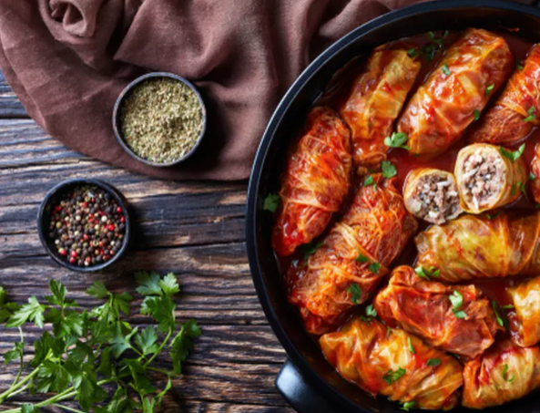
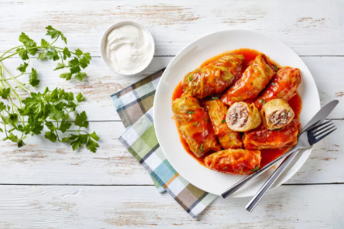

Sarmale traditionale

Unul dintre cele mai cunoscute preparate de la noi din țară. Sarmalele sunt consumate cel mai des
în restaurantele cu specific românesc. Făcute diferit în funcție de zonă, sarmale în foi de viță de vie
ori în foi de varză murată, gustul lor delicios nu se poate compara cu niciun alt preparat.
Mai jos, facem împreună, pas cu pas, sărmăluțe tradiționale, delicioase după cea mai simplă
rețetă de la bunica.
Ingredients
- 2 kg varză acră
- 450 g carne tocată de porc şi de vită
- 50 g orez
- 200 g ceapă
- ulei pentru prăjit
- 100 g costiţă afumată
- 2-3 linguri bulion
- 2 foi dafin
- sare
- piper
Mod de preparare:
- Se curăţă varza de frunzele exterioare şi de cotoare şi se aleg foile în care se va împacheta carne
- Se curăţă ceapa şi se spală, după care se taie mărunt. Se pune într-o cratiţă la călit cu ulei şi puţină apă şi se lasă până devine auri
- Se amestecă într-un castron ceapa prăjită şi răcită, cu carnea, piperul, sarea şi orezul, care a fost şi el opărit şi răci
- Se ia compoziţie de mărimea unei nuci şi se pune pe o frunză de varză, care se rulează cu marginile în interio
- Frunzele de varză mai mici se opresc şi se toacă solzişori pentru a forma un strat pentru sarmal
- Într-o cratiţă înaltă, peste varza tocată se pun sarmalele şi costiţa, iar deasupra un alt strat de varză tocată. Peste ele se toarnă bulionul înmuiat în apă, se pun frunzele de dafin şi câteva boabe de piper.
- Se lasă la fiert, la foc mic, timp de 2 ore. Din când în când, se mai completează cu apă, să nu se lipească.
- Când sarmalele sunt gata, se presară deasupra verdeață și sunt numai bune de mâncat. Poți mânca o porție de sărmăluțe tradiționale și cu smântână ori un ardei iute.
Produs final
